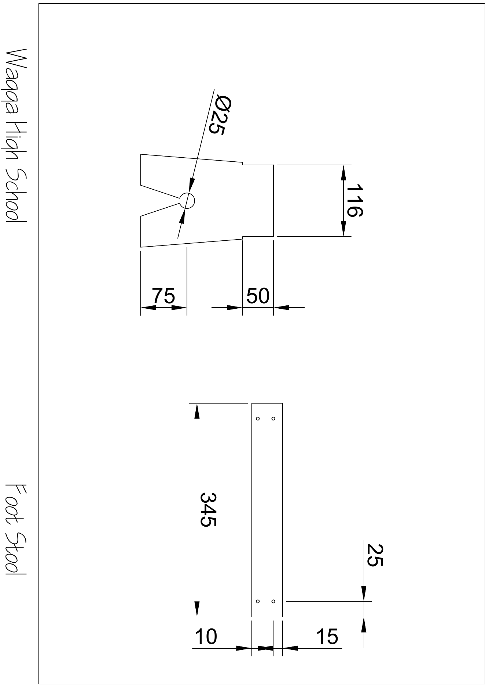
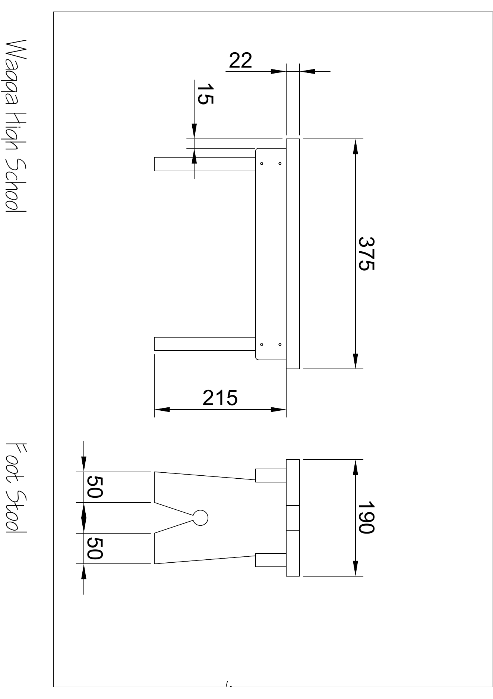

Locate
Open the original PDF, check the plan title and identify the page and view you need.
AUTHORITATIVE PROJECT PLAN
This unchanged two-page PDF is the sole dimensional and construction authority. Use written information and related views; never measure the screen preview.


PLAN-READING ROUTINE
Open the original PDF, check the plan title and identify the page and view you need.
Read the written dimension or symbol, then compare the related views. Do not infer from a thumbnail.
If information is unclear, pause and ask your teacher before practical work continues.